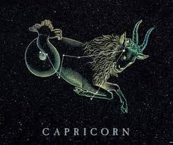
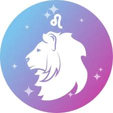
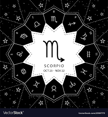
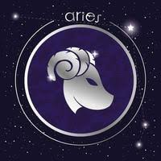
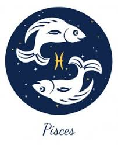
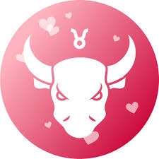

All Zodiac Signs Info
CAPRICORN-Born between late December and late January?
Then that makes you a Capricorn.The Capricorn sign isrepresented by the Goat and is associated
with Earth, Saturn, and the colour brown. When most people think of Capricorns, they think of words such
as "diligent," "success," and "practical."But there's much more to the Capricorn personality than this.
Here, we explain what a Capricorn is and what the most noteworthy Capricorn traits are.
We also go over what Capricorns are like in relationships and offer both advice for
Capricorns and tips on how to get along with a Capricorn.

LEO-is the fifth sign in the zodiac.The name is Latin for lion,
which is an apt one for those born under this sign are natural made leaders.
Ruled by the Sun, they are always the center of attention and the brightest stars in any room.Ancient Greek mythology recognized
it as the Nemean Lion that would take women back to its lair and lure warriors in to save them. But he was impervious to weapons,
so the Greek hero Heracles knew he had to use his bare hands.

Scorpio- Scorpio is a water sign that derives its strength from the psychic, emotional realm.
Like fellow water signs, Cancer and Pisces, Scorpio is extremely clairvoyant and intuitive. Life is a game of chess for these calculating water signs,
who are constantly plotting several steps ahead in order to orchestrate an eventual checkmate. This doesn't mean their intentions are necessarily nefarious.
Scorpios simply know what they want and aren't afraid to work hard and play the long game to get it.

Aries- It is a cardinal sign that kicks off not only the spring season
but also the entire zodiac wheel. Astrologers believe that each sign learn the lessons absorbed by its preceding signs, both joyful and painful.
In the case of Aries, however, there is no inherited wisdom.This sign is ruled by Mars, the dynamic redplanet named after the Roman god of war.
Accordingly, these courageous rams are always armed and ready for battle.

Pisces-Pisces is a sensitive water sign, ruled by the planet Neptune.
Your sign is fluid and tends to be sympathetic to the underdog. It’s so easy for you to feel other people’s experiences that they can obscure your own.
You can be vague and escapist, but make up for it by being compassionate and intuitive. Self-care doesn’t always come naturally to you,
but it’s incredibly important.

Taurus-It is an earth sign represented by the bull. Like their celestial spirit animal,
Taureans enjoy relaxing in serene, bucolic environments, surrounded by soft sounds, soothing aromas, and succulent flavors.
Taurus is ruled by Venus, the enchanting planet that governs love, beauty, and money. Taurus’s Venusian influence make
this earth sign the most sensual of the zodiac:
These cosmic oxen are enchanted by any physical manifestation of comfort and luxury.
